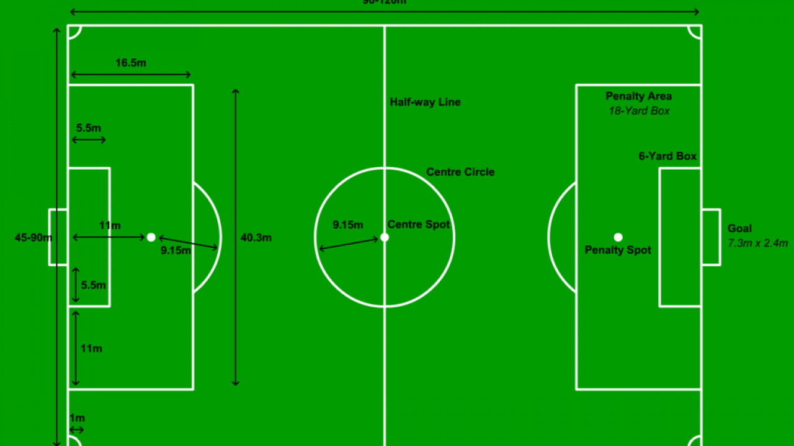

Ground

A football pitch (also known as a football field[1] or soccer field) is the playing
surface for the game of association football. Its dimensions and markings are defined by Law 1 of the
Laws of the Game, "The Field of Play".[2] The pitch is typically made of natural turf or artificial
turf, although amateur and recreational teams often play on dirt fields. Artificial surfaces must be
green in colour.
All line markings on the pitch form part of the area which they define. For example, a ball on
or above the touchline is still on the field of play, and a foul committed over the line bounding the
penalty area results in a penalty. Therefore, a ball must completely cross the touchline to be out of
play, and a ball must wholly cross the goal line (between the goal posts) before a goal is scored; if
any part of the ball is still on or above the line, the ball is still in play.
The field descriptions that apply to adult matches are described below. Because of the role of
the British football associations in the history of the game, the dimensions of the field of play were
originally formulated and expressed in imperial units. Since 1997, the Laws of the Game have preferred
metric units, with imperial equivalents given only in brackets. Because the actual values have, in general,
not changed since the early twentieth century, they tend to be round numbers in imperial units (for example
the width of the goal, unchanged since 1863, is 8 yards or 7.32 metres). Use of the imperial values remains
common, especially in the United Kingdom.